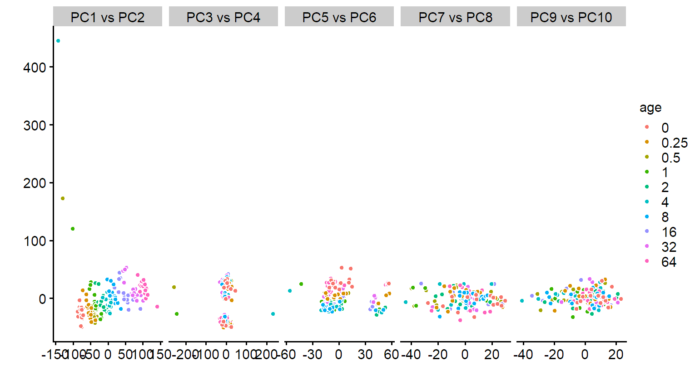
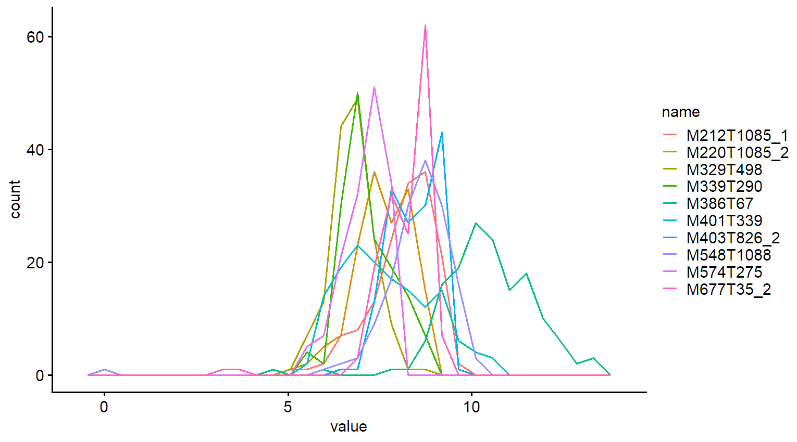
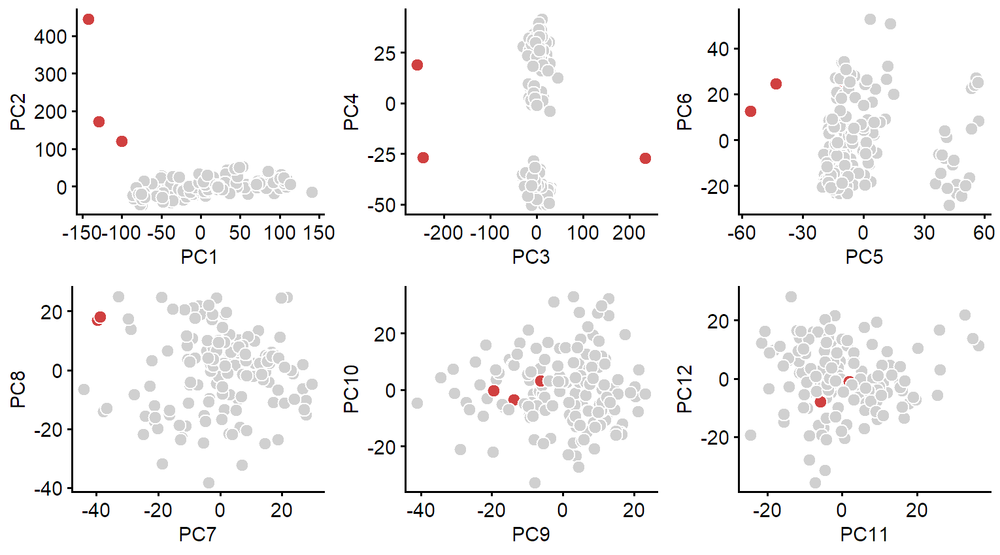
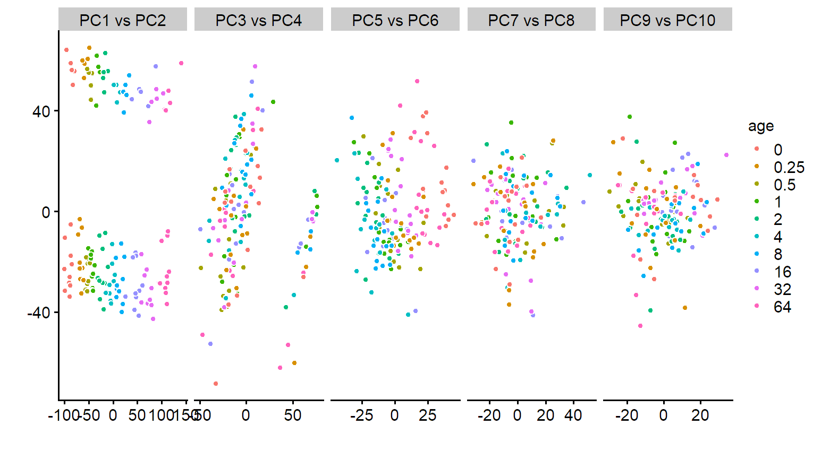
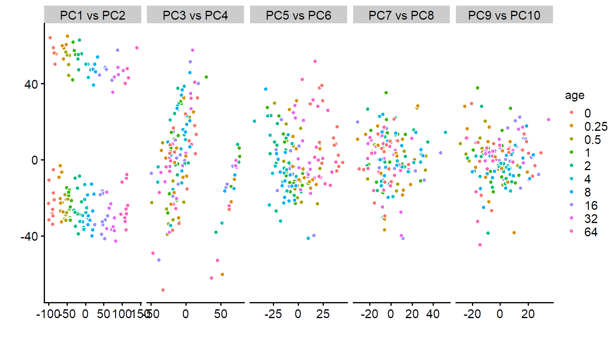
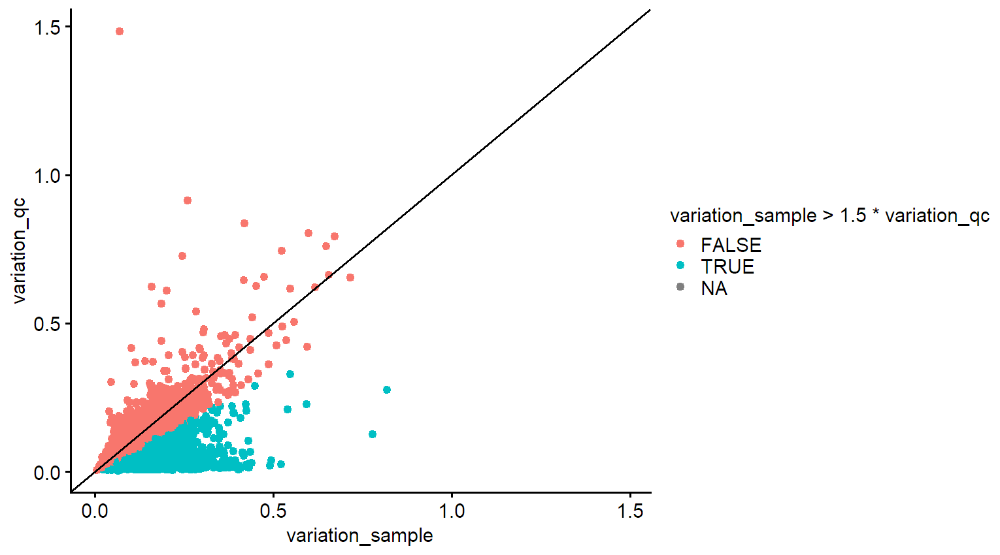
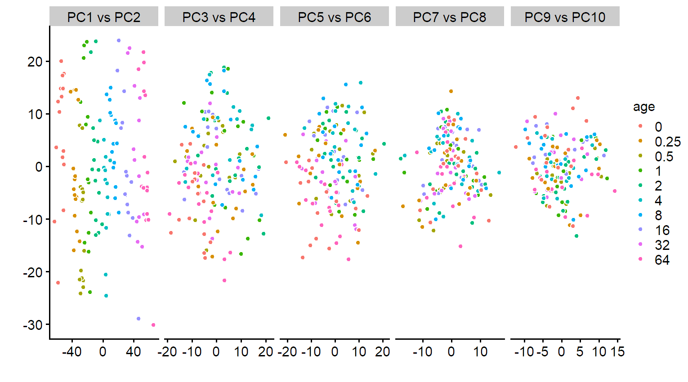
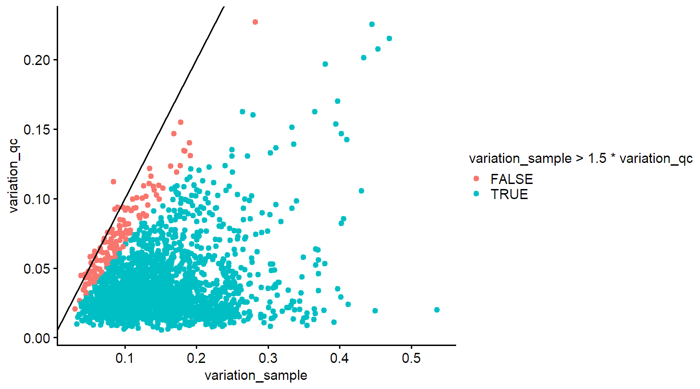
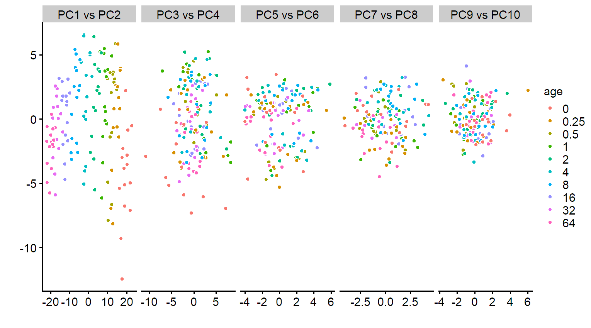
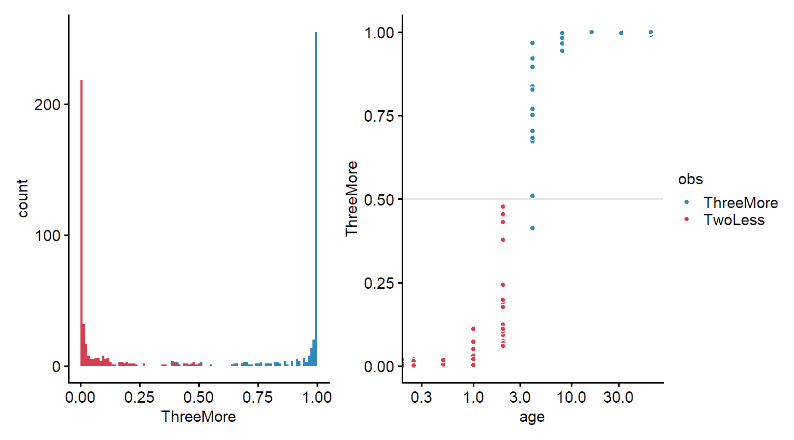

Ratios
Last updated: 2022-03-14
Checks: 6 1
Knit directory: workflowr/data/
This reproducible R Markdown analysis was created with workflowr (version 1.6.2). The Checks tab describes the reproducibility checks that were applied when the results were created. The Past versions tab lists the development history.
Great! Since the R Markdown file has been committed to the Git repository, you know the exact version of the code that produced these results.
Great job! The global environment was empty. Objects defined in the global environment can affect the analysis in your R Markdown file in unknown ways. For reproduciblity it’s best to always run the code in an empty environment.
The command set.seed(20220214) was run prior to running the code in the R Markdown file. Setting a seed ensures that any results that rely on randomness, e.g. subsampling or permutations, are reproducible.
Great job! Recording the operating system, R version, and package versions is critical for reproducibility.
- unnamed-chunk-11
To ensure reproducibility of the results, delete the cache directory preprocessing_thesis_cache and re-run the analysis. To have workflowr automatically delete the cache directory prior to building the file, set delete_cache = TRUE when running wflow_build() or wflow_publish().
Great job! Using relative paths to the files within your workflowr project makes it easier to run your code on other machines.
Great! You are using Git for version control. Tracking code development and connecting the code version to the results is critical for reproducibility.
The results in this page were generated with repository version 2947ad7. See the Past versions tab to see a history of the changes made to the R Markdown and HTML files.
Note that you need to be careful to ensure that all relevant files for the analysis have been committed to Git prior to generating the results (you can use wflow_publish or wflow_git_commit). workflowr only checks the R Markdown file, but you know if there are other scripts or data files that it depends on. Below is the status of the Git repository when the results were generated:
Ignored files:
Ignored: .Rhistory
Ignored: .Rproj.user/
Ignored: analysis/preprocessing_thesis_cache/
Untracked files:
Untracked: data/TraceAge_bloodspots_t3_neg_clean.csv
Untracked: data/TraceAge_bloodspots_t3_pos_clean.csv
Untracked: data/data_for_BN.RData
Note that any generated files, e.g. HTML, png, CSS, etc., are not included in this status report because it is ok for generated content to have uncommitted changes.
These are the previous versions of the repository in which changes were made to the R Markdown (analysis/preprocessing_thesis.Rmd) and HTML (docs/preprocessing_thesis.html) files. If you’ve configured a remote Git repository (see ?wflow_git_remote), click on the hyperlinks in the table below to view the files as they were in that past version.
| File | Version | Author | Date | Message |
|---|---|---|---|---|
| html | 1d9c725 | marcsole96 | 2022-03-01 | Build site. |
| html | e73936f | marcsole96 | 2022-02-25 | Build site. |
| html | 4d5bb0d | marcsole96 | 2022-02-15 | Build site. |
| html | 49fd168 | marcsole96 | 2022-02-14 | Build site. |
| html | 88464cc | marcsole96 | 2022-02-14 | Build site. |
| Rmd | b935ac7 | marcsole96 | 2022-02-14 | things done |
Load libraries
Load data
#setwd("../workflowr/data")
mdf <- read_csv("TraceAge_bloodspots_t3_pos_clean.csv")
ms = list()
ms$values <- mdf %>% select(-age, -type, -sample_id, -sample, -batch)
ms$rowinfo <- mdf %>% select(id = sample_id, age, type)
ms$rowinfo <- ms$rowinfo %>%
mutate(rowid = row_number()) %>%
mutate(age_class = ifelse(age < 3, "TwoLess", "ThreeMore"))Visualization function
PCA plot
plot_pca <- function(tmp1, tmp2, color_label, ranks = 10){
tmp3 <- prcomp(tmp2, center = T, scale. = T, rank. = ranks)
pdata <-
tmp3$x %>%
as_tibble() %>%
bind_cols(tmp1 %>% select(all_of(color_label)) %>% mutate_all(as.factor)) %>%
pivot_longer(cols = seq(1, ncol(.)-length(color_label), by=2)) %>%
select(x_val = value, x_name = name, everything()) %>%
pivot_longer(cols = starts_with("PC")) %>%
select(x_name, y_name = name,x_val, y_val = value, everything()) %>%
mutate(name = paste(x_name, "vs", y_name),
name = factor(name, levels = sort(name) %>% unique())) %>%
filter(as.numeric(gsub("PC", "", x_name)) + 1 == as.numeric(gsub("PC", "", y_name)))
pca_plot <- pdata %>%
ggplot(aes(x=x_val, y=y_val))+
geom_point(aes_string(fill = color_label), shape = 21, color = "white")+
facet_grid(~name, scales = "free")+
labs(x = "", y = "")+
NULL
return(pca_plot)
}Impute (zero)
ms$values[is.na(ms$values)] <- 0Fourth root transformation (0)
Transform data to dampen the skew
raw <- ms$values^0.25 %>% as_tibble()
rowinfo <- ms$rowinfo
ms$rowinfo0 <- rowinfo
ms$values0 <- as_tibble(raw)
tmp1 <- ms$rowinfo %>% filter(type %in% c("sample"))
tmp2 <- ms$values0[tmp1$rowid,] # include samples only
plot_pca(tmp1, tmp2, color_label = "age")
# Plot "histograms" (freqpoly) for 10 random features
n_features <- 10
tmp2 %>%
select(sample(1:ncol(.), size = n_features)) %>%
pivot_longer(cols = everything()) %>%
ggplot(aes(x=value, color = name))+
geom_freqpoly()
rm(tmp1,tmp2,tmp3)Remove sample PCA outliers (1)
We use the PCA axes to look for samples that are outliers.
Outliers are defined as more than 1.5*iqr90 away from the median value on each PCA axis.
raw <- ms$values0
rowinfo <- ms$rowinfo0
tmp1 <- ms$rowinfo %>% filter(type %in% c("sample")) %>% mutate(rowid2 = row_number())
tmp2 <- raw[tmp1$rowid,]
r <- prcomp(x = tmp2, retx = T, center=T, scale. = T, rank. = 12)
bad_rows <- tibble(rowid2=apply(r$x, 2, function(x) {
which(abs(x - median(x)) > (1.5 * quantile(x,0.95)-quantile(x,0.05)))
}) %>%
unlist() %>%
as.vector()) %>%
count(rowid2)
tmp1 <- tmp1 %>%
left_join(bad_rows) %>%
mutate(n=ifelse(is.na(n), 0,n)) %>%
mutate(label=ifelse(n>0, id, "")) %>%
{.}
pd <- r$x %>%
as_tibble() %>%
bind_cols(tmp1) %>%
{.}
pd <- pd %>%
mutate(response = ifelse(n>0,"Outlier", "Not outlier")) %>%
mutate(response = factor(response))
plotlist <- list()
for(i in 1:(ncol(r$x)/2)) {
xvar <- names(pd)[2*i-1]
yvar <- names(pd)[2*i]
p1 <- ggplot(pd,aes(x=!!ensym(xvar), y=!!ensym(yvar),
fill=response, label=label))+
geom_point(shape=21, color="#FFFFFFFF", size=3) +
scale_fill_manual(values = c("#D0D0D0", "#D04040")) +
theme(legend.position="none") +
NULL
plotlist[[length(plotlist)+1]] <- p1
rm(p1)
}
cowplot::plot_grid(plotlist = plotlist)
rm(plotlist)
bad_rows <- tmp1 %>% filter(n>0)
if (nrow(bad_rows) > 0) {
ms$values1 <- raw[-bad_rows$rowid,]
ms$rowinfo1 <- rowinfo[-bad_rows$rowid,]
} else {
ms$values1 <- raw
ms$rowinfo1 <- rowinfo
}
ms$rowinfo1 <- ms$rowinfo1 %>%
mutate(rowid = row_number())
rm(bad_rows, tmp1, tmp2, pd,r)
tmp1 <- ms$rowinfo1 %>% filter(type %in% c("sample"))
tmp2 <- ms$values1[tmp1$rowid,]
plot_pca(tmp1,tmp2,color_label = "age")
rm(tmp1,tmp2)Remove features with extreme values (2)
All features with at least 1 extreme value are completely removed.
An extreme value is defined as a value larger than median + 1.5 * q90
raw <- ms$values1
rowinfo <- ms$rowinfo1
tmp1 <- tibble(rowid = rowinfo$rowid, type = rowinfo$type) %>%
bind_cols(as_tibble(raw))
tmp1 <- tmp1 %>%
pivot_longer(names_to = "compound", values_to = "value", cols= c(-rowid, -type))
tmp2 <- tmp1 %>%
group_by(compound) %>%
summarise(n_bad = sum(value > median(value)+1.5*quantile(value,0.90))) %>%
{.}
bad_features <- tmp2 %>%
ungroup() %>%
filter(n_bad > 0) %>%
select(compound) %>%
distinct()
ms$values2 <- raw %>% select(-any_of(bad_features$compound))
ms$rowinfo2 <- rowinfo
rm(bad_features,tmp2,tmp1,raw)
tmp1 <- ms$rowinfo2 %>% filter(type %in% c("sample"))
tmp2 <- ms$values2[tmp1$rowid,]
plot_pca(tmp1,tmp2,color_label = "age")
rm(tmp1,tmp2)Optional: Remove features using qc and blind samples (3)
Basically we select features that:
- Have higher values in samples than in blinds
- Have higher values in QC samples than in blinds
- Have higher variation in samples than in blinds
- Have higher variation in samples than in QC samples
The logic is that real features in blinds:
- Have low values
- Are quite stable
The logic is that real features in QC samples:
- Have low or high values
- Are very stable
raw <- ms$values2
rowinfo <- ms$rowinfo2
tmp1 <- rowinfo %>% filter(type %in% c("blind", "qc", "sample"))
tmp2 <- raw[tmp1$rowid,]
pd1 <- tmp2 %>%
bind_cols(tmp1) %>%
pivot_longer(starts_with("M")) %>% # Convert to tidy format
group_by(type, name) %>%
summarise(median = median(value),
variation = mad(value)/median) %>%
pivot_wider(names_from = type, values_from=c(median,variation))
ggplot(pd1, aes(x=variation_sample, y=variation_qc,
color=variation_sample > 1.5*variation_qc)) +
geom_point() +
geom_abline(slope=1)
good_features <- pd1 %>%
filter(median_qc > 1.5*median_blind) %>%
filter(median_sample > 1.5*median_blind) %>%
filter(variation_sample > 1.5*variation_qc ) %>%
filter(variation_sample > 1.5*variation_blind) %>%
{.}
ms$rowinfo3 <- rowinfo
ms$values3 <- raw %>% select(any_of(good_features$name))
rm(tmp1,tmp2,pd1,good_features)
tmp1 <- ms$rowinfo3 %>% filter(type %in% c("sample"))
tmp2 <- ms$values3[tmp1$rowid,]
plot_pca(tmp1,tmp2,color_label = "age")
rm(tmp1,tmp2)Robust row normalization (4)
target_info <- ms$rowinfo3
target_values <- ms$values3 %>% as_tibble()
tmp1 <- target_info %>% filter(type %in% c("qc"))
tmp2 <- target_values[tmp1$rowid,]
stable_features <- tmp1 %>%
bind_cols(tmp2) %>%
pivot_longer(starts_with("M")) %>%
group_by(id) %>%
mutate(rank=rank(value)) %>%
ungroup() %>%
group_by(name) %>%
summarise(median = median(rank),
range = max(rank)-min(rank)) %>%
ungroup() %>%
slice_min(order_by = median, prop = 0.8) %>%
slice_max(order_by = median, prop = 0.8) %>%
slice_min(order_by = range, prop = 0.8)
raw <- target_values
data.x <- raw
tmp <- rowSums(target_values %>% select(any_of(stable_features$name)))
raw <- max(raw)*raw / tmp
ms$values4 <- raw
ms$rowinfo4 <- target_info
rm(raw,data.x,tmp, stable_features)
rm(target_info, target_values)
tmp1 <- ms$rowinfo4 %>% filter(type %in% c("sample"))
tmp2 <- ms$values4[tmp1$rowid,]
plot_pca(tmp1,tmp2, color_label = "age")
rm(tmp1,tmp2)Optional: Top 250 ranked features for ML (5)
raw <- ms$values4
rowinfo <- ms$rowinfo4
tmp1 <- rowinfo %>% filter(type %in% c("blind", "qc", "sample"))
tmp2 <- raw[tmp1$rowid,]
pd1 <- tmp2 %>%
bind_cols(tmp1) %>%
pivot_longer(starts_with("M")) %>% # Convert to tidy format
group_by(type, name) %>%
summarise(median = median(value),
variation = mad(value)/median) %>%
pivot_wider(names_from = type, values_from=c(median,variation))
ggplot(pd1, aes(x=variation_sample, y=variation_qc,
color=variation_sample > 1.5*variation_qc)) +
geom_point() +
geom_abline(slope=1)
good_features <- pd1 %>%
filter(variation_sample > 2.5*variation_qc ) %>%
filter(variation_sample > 2.5*variation_blind) %>%
arrange(desc(variation_sample)) %>%
{.}
top250 <- good_features %>% slice(1:250)
ms$rowinfo5 <- rowinfo
ms$values5 <- raw %>% select(any_of(top250$name))
rm(tmp1,tmp2,pd1,good_features,top250)
tmp1 <- ms$rowinfo5 %>% filter(type %in% c("sample"))
tmp2 <- ms$values5[tmp1$rowid,]
plot_pca(tmp1,tmp2, color_label = "age")
rm(tmp1,tmp2)Caret training
target_info <- ms$rowinfo5
target_values <- ms$values5
run <- 1
response <- "age_class"
tuneLength <- 5
method <- "ranger" # "ranger"
set.seed(run)
if (response=="age_regression") {
x <- target_info %>%
filter(type=="sample") %>%
mutate(response = as.numeric(age))
}
if (response=="age_class") {
x <- target_info %>%
filter(type=="sample") %>%
mutate(response = factor(age_class)) %>%
{.}
}
training_data <- x %>%
select(response) %>%
bind_cols(target_values[x$rowid,])
input_x <- as.matrix(select(training_data, -response))
input_y <- training_data$response
rm(training_data,x)
#### trainControl ####
tune_control <- caret::trainControl(
method = "repeatedcv", number = 10, repeats = 5,
verboseIter = ifelse(is.null(getOption('knitr.in.progress')), TRUE, FALSE),
allowParallel = F,
classProbs = ifelse(is.factor(input_y), TRUE, FALSE),
savePredictions = "final")
#### Train ####
model_cv <- caret::train(
x = input_x,
y = input_y,
method = method,
trControl = tune_control,
tuneLength = tuneLength,
importance = "permutation",
metric = ifelse(is.factor(input_y), "Kappa", "RMSE")
)
Warning: The above code chunk cached its results, but it won’t be re-run if previous chunks it depends on are updated. If you need to use caching, it is highly recommended to also set knitr::opts_chunk$set(autodep = TRUE) at the top of the file (in a chunk that is not cached). Alternatively, you can customize the option dependson for each individual chunk that is cached. Using either autodep or dependson will remove this warning. See the knitr cache options for more details.
Machine learning performance
library(patchwork)
if(is.factor(input_y)) {
confusionMatrix(data = model_cv$pred$pred, reference = model_cv$pred$obs)
a <-
ggplot(model_cv$pred, aes(x=ThreeMore, fill = obs)) +
geom_histogram(breaks = seq(0,1,length.out = 100), show.legend = F) +
scale_fill_manual(values = c("#3288bd", "#d53e4f"))
b <-
model_cv$pred %>%
arrange(rowIndex) %>%
group_by(rowIndex) %>%
summarise(ThreeMore = mean(ThreeMore),
TwoLess = mean(TwoLess),
obs = unique(obs)) %>%
mutate(pred = ifelse(ThreeMore>0.5, "ThreeMore", "TwoLess")) %>%
bind_cols(target_info %>% filter(type == "sample")) %>%
ggplot(aes(x=age, y=ThreeMore, fill=obs))+
geom_hline(yintercept = 0.5, color = "gray90")+
geom_point(shape = 21, color = "white")+ #, position = "identity"
scale_fill_manual(values = c("#3288bd", "#d53e4f")) +
scale_x_continuous(trans='log10')
a+b
}
if(!is.factor(input_y)) {
ggplot(data = model_cv$pred, aes(x=obs, y=pred)) + geom_point() + geom_abline()
}
sessionInfo()R version 4.0.4 (2021-02-15)
Platform: x86_64-w64-mingw32/x64 (64-bit)
Running under: Windows 10 x64 (build 22000)
Matrix products: default
locale:
[1] LC_COLLATE=Catalan_Spain.1252 LC_CTYPE=Catalan_Spain.1252
[3] LC_MONETARY=Catalan_Spain.1252 LC_NUMERIC=C
[5] LC_TIME=Catalan_Spain.1252
attached base packages:
[1] stats graphics grDevices utils datasets methods base
other attached packages:
[1] patchwork_1.1.1 ggrepel_0.9.1 purrr_0.3.4 dplyr_1.0.5
[5] tidyr_1.1.3 readr_1.4.0 caret_6.0-86 lattice_0.20-41
[9] cowplot_1.1.0 ggplot2_3.3.3
loaded via a namespace (and not attached):
[1] sass_0.3.1 jsonlite_1.7.2 splines_4.0.4
[4] foreach_1.5.1 prodlim_2019.11.13 bslib_0.2.4
[7] assertthat_0.2.1 highr_0.9 stats4_4.0.4
[10] yaml_2.2.1 ipred_0.9-10 pillar_1.6.0
[13] glue_1.4.2 pROC_1.17.0.1 digest_0.6.25
[16] promises_1.2.0.1 colorspace_1.4-1 recipes_0.1.16
[19] htmltools_0.5.1.1 httpuv_1.5.5 Matrix_1.2-18
[22] plyr_1.8.6 timeDate_3043.102 pkgconfig_2.0.3
[25] scales_1.1.1 whisker_0.4 later_1.1.0.1
[28] gower_0.2.2 lava_1.6.9 proxy_0.4-25
[31] git2r_0.28.0 tibble_3.0.3 generics_0.1.0
[34] farver_2.0.3 ellipsis_0.3.1 withr_2.4.2
[37] nnet_7.3-14 cli_2.4.0 survival_3.2-7
[40] magrittr_2.0.1 crayon_1.4.1 evaluate_0.14
[43] ps_1.6.0 fs_1.5.0 fansi_0.4.1
[46] nlme_3.1-149 MASS_7.3-53 class_7.3-17
[49] tools_4.0.4 data.table_1.13.0 hms_1.0.0
[52] lifecycle_1.0.0 stringr_1.4.0 munsell_0.5.0
[55] e1071_1.7-6 compiler_4.0.4 jquerylib_0.1.3
[58] rlang_0.4.10 grid_4.0.4 iterators_1.0.13
[61] rstudioapi_0.13 labeling_0.4.2 rmarkdown_2.11
[64] gtable_0.3.0 ModelMetrics_1.2.2.2 codetools_0.2-18
[67] DBI_1.1.1 reshape2_1.4.4 R6_2.5.0
[70] lubridate_1.7.10 knitr_1.37 utf8_1.2.1
[73] workflowr_1.6.2 rprojroot_2.0.2 stringi_1.5.3
[76] Rcpp_1.0.7 vctrs_0.3.7 rpart_4.1-15
[79] tidyselect_1.1.0 xfun_0.29